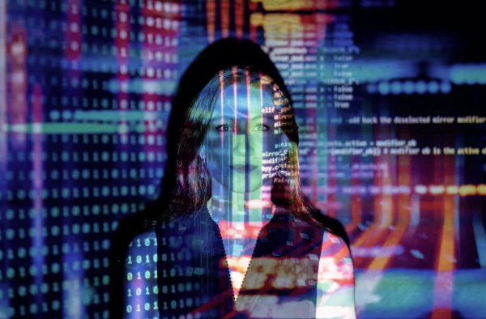

Hva er egentlig disse mystiske vesenene kalt "datamaskiner"? Datamaskiner er disse små, magiske bokskapningene som har inntatt våre hjem. De lurer i hjørnene, skjuler seg i skap, og sniker seg til og med inn i lommebøker! Men frykt ikke, kjære foreldre, vi er her for å avsløre deres hemmeligheter. Datamaskiner er egentlig trollmenn i forkledning. De forvandler tanker til tekst, teleporterer oss gjennom verdener av informasjon, og lærer barna våre å trykke på knapper raskere enn vi noensinne kunne forestille oss. Men frykt ikke, FMD er her for å beskytte våre kjære fra disse digitale trollmennene. Vi har møter, kampanjer og til og med en "Trykk på en ekte knapp"-dag. Så bli med oss i kampen mot de mystiske datamaskinene, og sammen skal vi avsløre deres hemmeligheter og beskytte vår analoge verden!